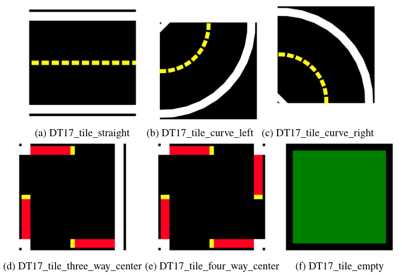
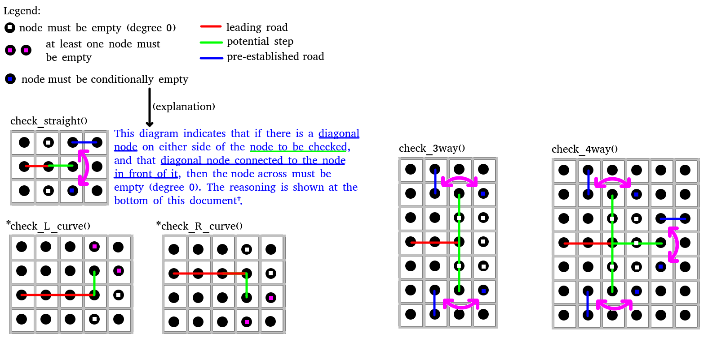

5 juin - 19 juin
Cette semaine j'ai entamé l'esquisse de l'algorithme en pseudocode. Il est vite devenu plus complexe que je ne m'attendais. Je suis passé par plusieurs idées d'architecture pour le réseau en tant que tel, chacune plus complexe, mais plus juste que la dernière.
Au début, je voulais simplement essayer de placer les carreaux de façon aléatoire et itérative. Le premier problème principale est le fait qu'il y a 4 versions de chaque carreau: nord, sud, est et ouest. Cette duplication rend la méthode de retour-arrière beaucoup moins efficace. Le deuxième problème est que utiliser des carreaux prédifinis et immuables entraîne beaucoup de cas où une solution possible serait traitée comme impossible. Par exemple si nous voulions connecter une route verticale avec une route horizontale, ce serait impossible puisque le carrreau horizontal est prédéfini, tandis que nous aurions pu tout simplement les connecter pour former une intersection.

Cela m'a fait remarquer qu'un graphe avec des noeuds et des arcs serait utile pour représenter le réseau pendant sa construction. Comme ça il y a un modèle dynamique qui peut être mis à jour selon les spécifications de Duckietown au fur et à mesure, et qui à la fin de la génération sera converti directement aux carreaux correspondants.
Avec cette idée en tête je commençai l'écriture de la logique de l'algorithme en pseudocode. La partie la plus intelectuellement éxigeant fut la vérification de la validité des ajouts potentiels d'arcs dans le graphe. Pour expliquer, les 2 contraintes topologiques de Duckietown dictent ce qui est un réseau valide et ce qui ne l'est pas:
- Une intersection ne peut pas être adjacente à un carreau de route courbée ou d'un autre carreau d'intersection
- Deux carreaux adjacents et non-vides doivent avoir un chemin faisable de longueur 2; s'ils sont adjacents, ils doivent être connectés.
Ces 2 règles sont simples et intuitives pour des êtres humains qui construisent des réseaux, mais elles ont des ramifications bien plus complexes quand elles doivent être généralisées pour des ajouts automatisés. Mon algorithme utilise une série de méthodes pour la vérification d'ajout de route, et leurs diagrammes démontrent bien le niveau de complexité entraîné:

Pour arriver à ces règles, je suis passé par beaucoup d'étapes intermédiaires, où je croyais avoir décelé la bonne logique pour les foncitons vérificatrices, mais finalement il y avait un cas extrême qui nécessitait la réécriture totale de mon travail.